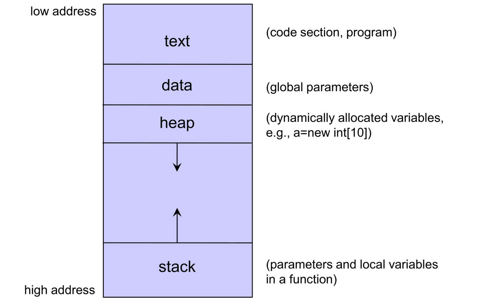
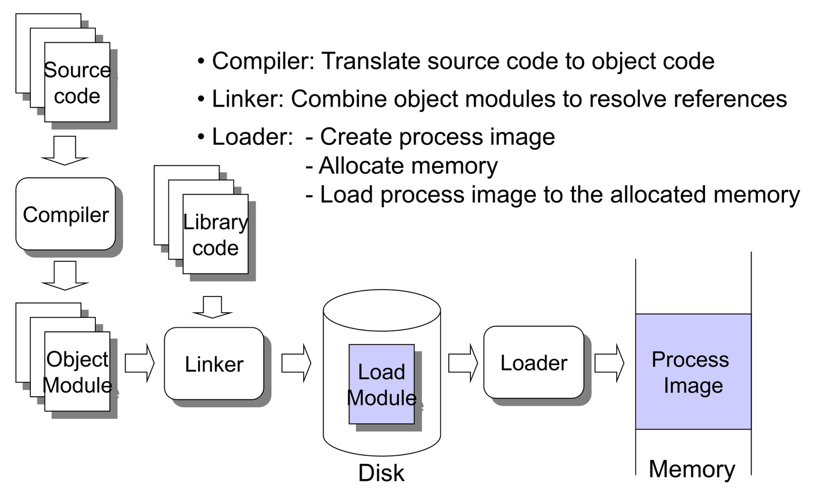
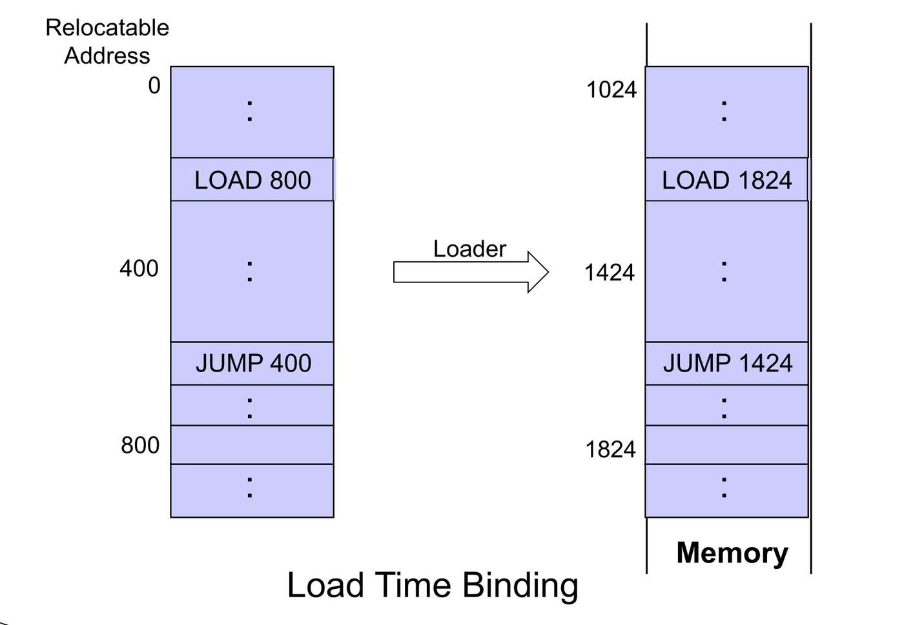
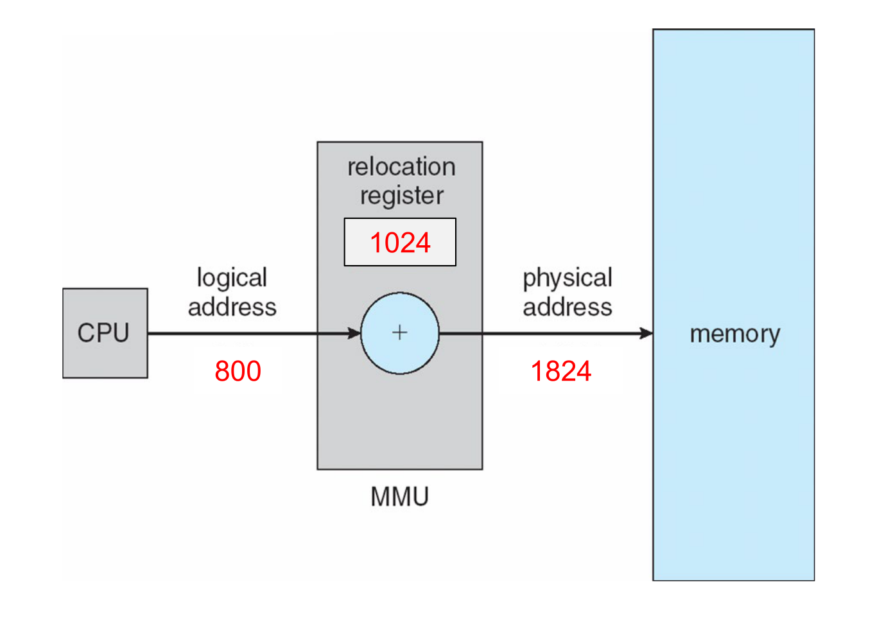
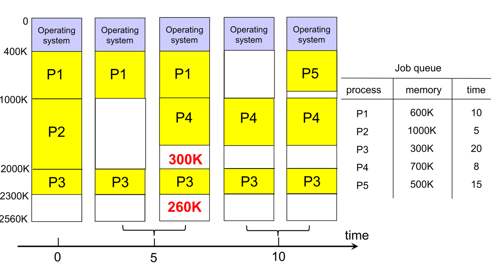
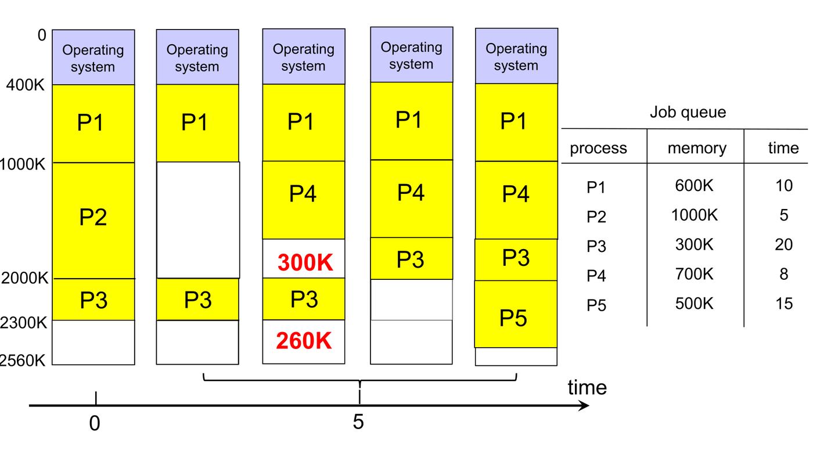
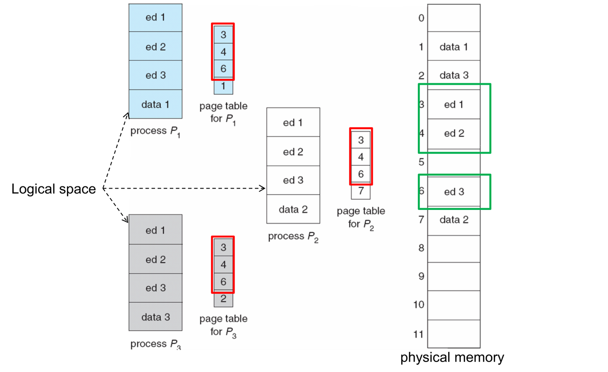
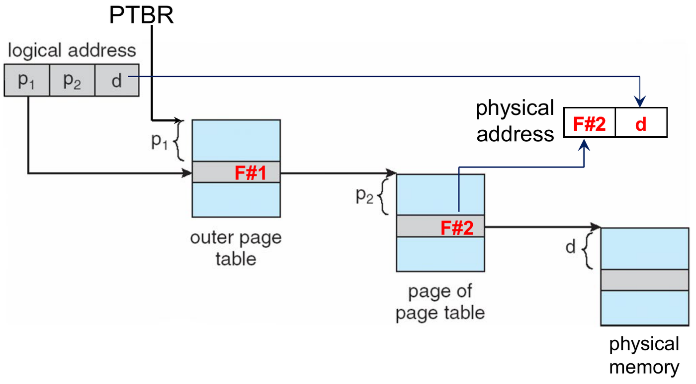
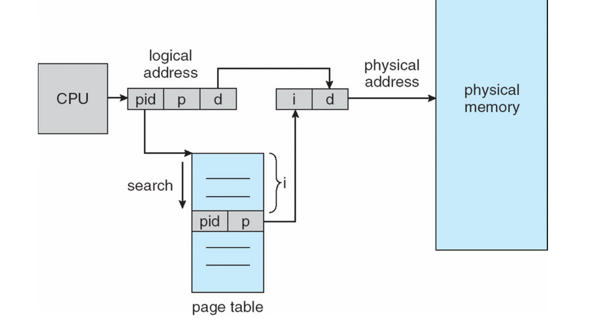
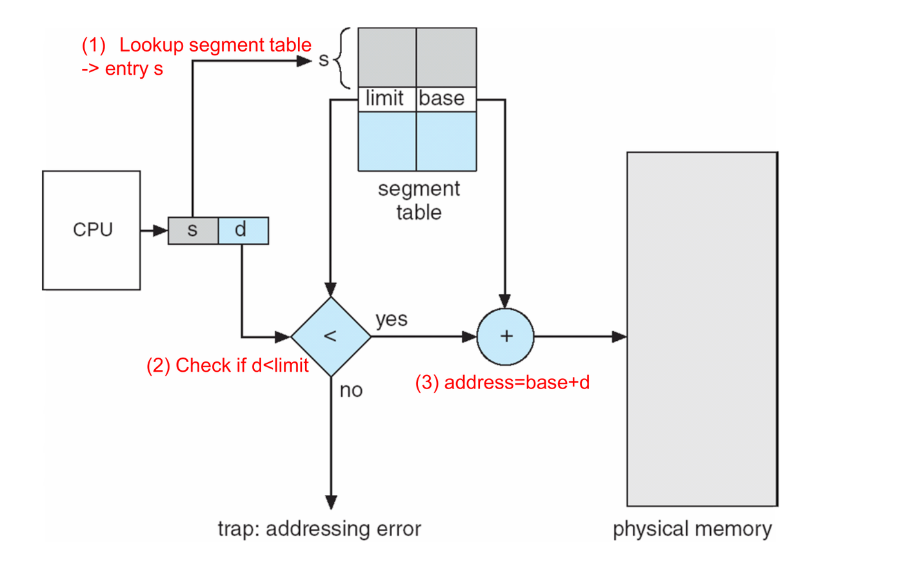

Main memory is a central repository of data shared by the CPU and I/O devices. For a program to execute, its instructions and data must reside in physical RAM.
This chapter examines how abstract program addresses are bound to physical memory locations, how the operating system manages memory allocations (contiguous partitioning, paging, and segmentation), and how hardware accelerates address translation using Translation Lookaside Buffers (TLBs) and multi-level page tables.
1. Address Binding and The Memory-Management Unit (MMU)
Process Memory Layout & Compilation Pipeline
A compiled process in memory consists of four segments: Text (instructions), Data (globals), Heap (dynamic allocations), and Stack (local variables and call frames):

Source code undergoes a multi-stage translation before execution:
- Compiler: Translates source code into an object module.
- Linker: Combines multiple object modules and system libraries into a single load module.
- Loader: Loads the load module into physical RAM, instantiating the process image.

The Three Address Binding Stages
Address binding is the mapping of program instructions and data to physical memory addresses:



| Binding Time | Address Representation | Relocation Flexibility | Primary Trade-Off |
|---|---|---|---|
| Compile Time | The compiler generates absolute physical addresses directly. | Zero: If the starting memory location changes, the program must be completely recompiled. | Fast hardware execution; zero runtime relocation. |
| Load Time | The compiler generates relocatable addresses (relative to offset 0). The loader binds them to absolute addresses when loading into memory. | Static: The program can load anywhere in RAM, but once loaded, it cannot move during execution because pointers are hardcoded in memory. | Slower load phase; cannot accommodate memory compaction. |
| Execution Time (Run Time) | Instructions retain relative logical addresses during execution. The Memory-Management Unit (MMU) hardware dynamically adds a relocation register on every memory access. | Dynamic: The process can be moved, swapped to disk, or compacted at any time simply by updating the MMU register. | Requires dedicated MMU hardware support; standard in modern OSs. |

Logical vs. Physical Address Spaces
- Logical (Virtual) Address: An address generated by the CPU during instruction execution. With execution-time binding, the logical address space starts at 0.
- Physical Address: The actual hardware memory location loaded onto the memory bus.
- Bounds Verification:
2. Contiguous Memory Allocation
In early systems, each process occupied a single contiguous block of physical memory:
Fixed vs. Variable (Dynamic) Partitioning
- Fixed Partitions: Memory is divided into fixed-size
partitions. A process is assigned to an available partition.
- Vulnerability: Internal Fragmentation—the unused space within an allocated partition (e.g. a 12 KB process inside a 16 KB partition wastes 4 KB).
- Dynamic (Variable) Partitions: The OS allocates memory blocks sized exactly to process requests. As processes terminate, memory breaks into a collection of variable-sized free holes:

- Vulnerability: External Fragmentation—total free memory space is sufficient to satisfy a request, but the space is fractured into small, non-contiguous holes.
Memory Placement Strategies
When a new process requests a block of size from available holes:
| Strategy | Search Rule | Performance & Fragmentation |
|---|---|---|
| First-Fit | Allocate the first hole that is large enough (). | Fastest search time; produces smaller holes at the beginning of memory. |
| Best-Fit | Allocate the smallest hole that is large enough (). Must search entire list (unless sorted). | Leaves behind tiny, unusable residual holes (worst external fragmentation). |
| Worst-Fit | Allocate the largest available hole. Must search entire list. | Leaves behind larger leftover holes that may accommodate subsequent requests. |
[!NOTE] Empirical analysis shows that First-Fit and Best-Fit are superior to Worst-Fit in both speed and storage utilization. First-Fit is typically the fastest.
Compaction
Compaction shuffles allocated memory partitions to merge all scattered free holes into a single continuous block:

[!IMPORTANT] Compaction Prerequisite: Compaction is possible if and only if address binding is performed at execution time. With load-time or compile-time binding, internal pointers are absolute and moving memory corrupts program execution.
AY15/16 S2 Q3b: Memory Placement Algorithms (First, Best, Worst Fit)
Question: Given memory holes of 100K, 500K, 200K, 300K, and 600K (in order), how would First-Fit, Best-Fit, and Worst-Fit algorithms place requests of 212K, 417K, 112K, and 426K? Which algorithm makes the most efficient use of memory?
Step-by-Step Allocation Trace:
- First-Fit:
- Request 212K: Fits into 500K hole (leaving 288K).
- Request 417K: Fits into 600K hole (leaving 183K).
- Request 112K: Fits into 288K hole (leaving 176K).
- Request 426K: Cannot be allocated (Holes remaining: 100K, 176K, 200K, 300K, 183K; none ).
- Best-Fit:
- Request 212K: Fits into 300K hole (leaving 88K).
- Request 417K: Fits into 500K hole (leaving 83K).
- Request 112K: Fits into 200K hole (leaving 88K).
- Request 426K: Fits into 600K hole (leaving 174K).
- All requests successfully allocated!
- Worst-Fit:
- Request 212K: Fits into 600K hole (leaving 388K).
- Request 417K: Fits into 500K hole (leaving 83K).
- Request 112K: Fits into 388K hole (leaving 276K).
- Request 426K: Cannot be allocated (Holes remaining: 100K, 83K, 200K, 300K, 276K; none ).
Verdict: Best-Fit is the most efficient, as it is the only strategy that accommodates all four requests.
3. Paging Architecture
Paging is a non-contiguous memory management scheme that completely eliminates external fragmentation:
- Physical memory is divided into fixed-size blocks called frames (typically 4 KB).
- Logical address space is divided into blocks of the same size called pages.

Address Translation Mechanics
For a CPU-generated logical address of bits with a page size of bytes:
- Extract Offset (): The lowest bits ().
- Extract Page Number (): The highest bits ().
- Table Lookup: Use as an index into the process’s Page Table to retrieve Frame Number ().
- Physical Address Formulation: Concatenate with offset :


Fragmentation in Paging
- External Fragmentation: Zero. Any free frame can be allocated to any process.
- Internal Fragmentation: Occurs only on the last page of a process, where unallocated bytes remain unused. (Average internal fragmentation ).
Shared Pages
Paging enables concurrent processes to share common code (such as C standard libraries or text editors):
- Reentrant (Read-Only) Code: Shared pages must be read-only so that concurrent execution cannot alter shared instructions.
- Multiple page tables map different logical pages to the same physical frame numbers:

4. Hardware Translation Acceleration: The TLB
Because page tables reside in main memory, standard paging requires two memory accesses per data reference:
- Access memory to fetch the page table entry ().
- Access memory to read/write the actual physical data address.
To eliminate this 50% performance penalty, hardware includes a specialized high-speed associative hardware cache called the Translation Lookaside Buffer (TLB):

Effective Access Time (EAT) Calculation
Let:
- = TLB Hit Ratio (fraction of times page number is found in TLB).
- = TLB Search Time (typically ns).
- = Main Memory Access Time (typically 10–100 ns).
[!TIP] When Does a TLB Improve Performance? A TLB improves performance over direct memory paging () if and only if :
AY17/18 S1 Q3b & AY18/19 S1 Q3b: TLB Effective Access Time
Question: Memory access time is 100 ns, TLB search time is 20 ns, and TLB hit ratio is 80%. (i) Calculate Effective Access Time (EAT). (ii) What must the hit ratio be to achieve an EAT of at most 140 ns?
Solution: (i) EAT Calculation:
(ii) Target Hit Ratio:
5. Hierarchical and Advanced Page Table Structures
On modern 32-bit and 64-bit architectures, a flat page table is too massive to store contiguously:
- A 32-bit system with 4 KB pages has pages 4 bytes/entry per page table.
- Storing 4 MB contiguously in physical RAM per process causes severe memory pressure.
Two-Level (Hierarchical) Paging
The page table itself is paged:


For a 32-bit logical address with 4 KB pages ( bytes):
- Page Offset (): 12 bits.
- Remaining Page Bits: bits.
- Each page table entry occupies 4 bytes a 4 KB page table holds entries.
- The 20 page bits partition into:
- (Outer Page Table Index): 10 bits ( entries).
- (Inner Page Table Index): 10 bits ( entries).
- Memory Access Cost: A two-level page table requires 3 physical memory accesses per data reference without a TLB (Outer Table Inner Table Physical Data).
Inverted Page Table
Instead of maintaining a separate page table for every process, an Inverted Page Table maintains a single global table indexed by physical frame numbers:

- Each entry contains .
- Advantage: Drastically reduces memory consumption: table size depends on physical memory size, not virtual address space.
- Disadvantage: Lookup requires searching the entire table; solved using in-memory hash tables.
6. Segmentation
Segmentation is a memory-management scheme that
reflects the programmer’s view of memory. Rather than arbitrary
fixed-size blocks, memory is divided into variable-length logical units
(e.g. main program, symbol table, stack, subroutines):

Segment Address Translation
A logical address consists of a two-tuple: (Segment Number , Offset ). Each entry in the Segment Table contains:
- Base: Starting physical address of the segment in RAM.
- Limit: Exact length of the segment.

Hardware Address Translation Steps:
- Check bounds:
- If legal:
- Fragmentation Profile: Segmentation suffers from External Fragmentation (variable-length segments leave dynamic holes) but has Zero Internal Fragmentation.
AY16/17 S1 Q3b & AY17/18 S2 Q3b: Segmentation Translation
Problem Setup: Segment table:
- Segment 0: Base 219, Limit 600
- Segment 1: Base 2300, Limit 14
- Segment 2: Base 90, Limit 100
- Segment 3: Base 1327, Limit 580
- Segment 4: Base 1952, Limit 96
Translate Logical Addresses :
- : Legal. .
- : Legal. .
- : Illegal (Trap: Segmentation Fault).
- : Legal. .
- : Illegal (Trap: Segmentation Fault).
AY Past-Paper Checks: Memory & Address Translation
- AY17/18 S2 Q3a(i): If address binding is performed at execution time, addresses generated by the CPU can directly access physical memory. False. The CPU generates a logical address; the MMU must add the relocation register or translate via page tables to produce the physical address.
- AY18/19 S2 Q3a(i): Load-time address binding generates identical logical and physical addresses. True. Load-time binding computes absolute physical memory addresses at load time.
- AY16/17 S1 Q3a(iii): With demand paging, address binding must be performed at load time. False. Paged blocks migrate dynamically between disk and any available physical frame in RAM; binding must occur at execution time.
- AY19/20 S1 Q3a(ii): If address binding is performed during load time, the compiler must generate re-locatable code. True. The compiler produces relative offsets starting at 0, which the loader binds to physical addresses.